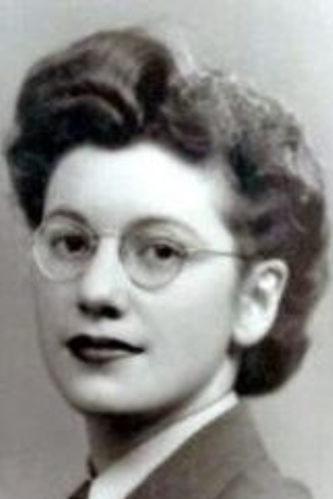

(Reino Unido, 24 de junio de 1917 - 4 de septiembre de 1996)

Joan Clarke, matemática y criptoanalista, tuvo un rol central en la hazaña que implicó descifrar el Código Enigma utilizado por los alemanes, durante la Segunda Guerra Mundial. La británica trabajó codo a codo junto a Alan Turing y su equipo para desentrañar el funcionamiento de ese sistema que se usaba para codificar mensajes.
Joan Clarke fue la única mujer en integrar este grupo ultra secreto que tuvo un rol fundamental durante ese período bélico. Sin su trabajo y el del resto de los especialistas, la guerra podría haber tenido otro desenlace.
Si bien se estima que unas 8.000 mujeres trabajaron en Bletchley Park, todas tenían funciones de asistentes, secretarias u operadoras. Además de tener salarios menores a sus pares hombres, no se les daba la posibilidad de desempeñarse como criptoanalistas. En este sentido, la tarea de Clarke fue una excepción a la regla.
De todos modos, no tuvo el mismo trato que los hombres que integraban la división Hut 8. Llegó a ser jefa adjunta allí, pero no se le permitió progresar mucho más y su salario siempre fue inferior a la de sus pares hombres.
Durante años, su participación quedó en el olvido. Fue en el último tiempo, sobre todo después de la película El código Enigma (The imitation game), estrenada en 2015, que su rol salió a la luz con más fuerza.
Clarke nació el 24 de junio de 1917, en Londres. Una vez que finalizó el secundario se ganó una beca para estudiar en Cambridge donde obtuvo dos títulos de grado en Matemáticas.
Su ingenio la destacó ante el resto y su profesor de Geometría, Gordon Welchman, la convocó para trabajar en Bletchley Park para la Escuela Gubernamental de Código y Cifrado (GCCS), que tenía como finalidad descifrar cómo funcionaba la máquina Enigma que utilizaban los alemanes para comunicarse de manera secreta.
En 1940 se incorporó al equipo de trabajo que se había originado el año anterior. En un comienzo fue parte del grupo denominado "Las Niñas", donde había otras mujeres haciendo trabajos de asistencia y soporte para los hombres; pero al poco tiempo se incorporó a la sección Hut 8 donde estaba Turing con quien forjó una amistad que duró toda la vida.
Se trataba de una máquina electromecánica desarrollada por el ingeniero alemán Arthur Scherbius. Contaba con un sistema de mecanismo de cifrado rotatorio que servía tanto para cifrar como para descifrar mensajes.
El matemático polaco Marian Rejewski fue clave para identificar el sistema de cifrado. Esbozó un diseño sobre el cual luego Turing ideó, en 1939, Bombe, un dispositivo electromecánico que usaron los británicos para entender los mensajes de los alemanes.
El sistema fue luego rediseñado por Gordon Welchman y la construcción estuvo a cargo de Harold Keen de la British Tabulating Machine Company.
Esta máquina permitió identificar miles de mensajes diarios que transmitían los alemanes a diario y por eso se considera que tuvo un rol fundamental en la victoria de los Aliados.
Clarke recibió en 1947 la Orden del Imperio Británico por su trabajo durante la Segunda Guerra Mundial. Ese mismo año conoció al Teniente Coronel John Kenneth Ronald Murray, con quien se casó en 1952.
La matemática, que siempre tuvo un perfil bajo y nunca habló demasiado sobre sus días en Bletchley Park, falleció en 1996 en Oxfordshire.